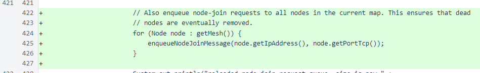

Nyzo version 513 (commit on GitHub) improves the node-join process.
This version only affects the verifier, and the changes are minor. This version can be skipped if you find its changes uninteresting. This version was released now because its changes are necessary to allow the Nyzo verifiers to continue to provide complete, accurate mesh information to the Nyzo web server.
In NodeManager, the current mesh is now enqueued for node-join requests along with the mesh provided by another node. This ensures that all nodes known to NodeManager are queried once per reloading of the node-join queue.
In MeshResponse, lists of nodes that exceed the maximum count are randomized before culling. This prevents the same set of nodes from being removed from every response.